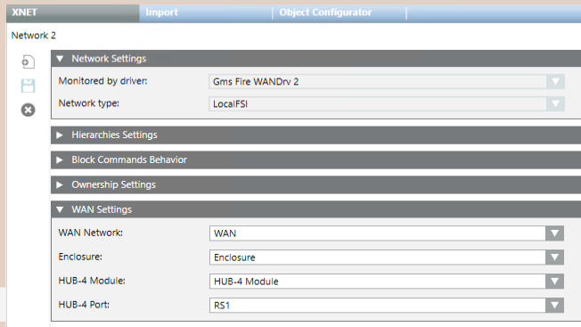

XNET in Fire WAN Network Reference
This section provides some reference information about the XNET network configuration parameters for Fire WAN (available when the Fire WAN extension is installed).
For a step-by-step guide to the Fire WAN network configuration, search for Configuring a Fire WAN.
Network Settings
In FIRE WAN architectures, the Monitored by driver selection of the Network Setting tab must be a FIRE WAN driver.
In Network type, you can select:
- Local FSI, for a single XNET panel
- Global FSI, for a multiple-panel XNET network
XNET Parameters for Fire WAN
When a FIRE WAN driver is associate to an XNET, the WAN Settings expander appears in the XNET tab to support the WAN connection configuration.
The following parameters are required. You can configure them manually or drag a Hub-4 port from System Browser into the expander.
- WAN Network
- Enclosure
- HUB-4 Module
- HUB-4 Port
